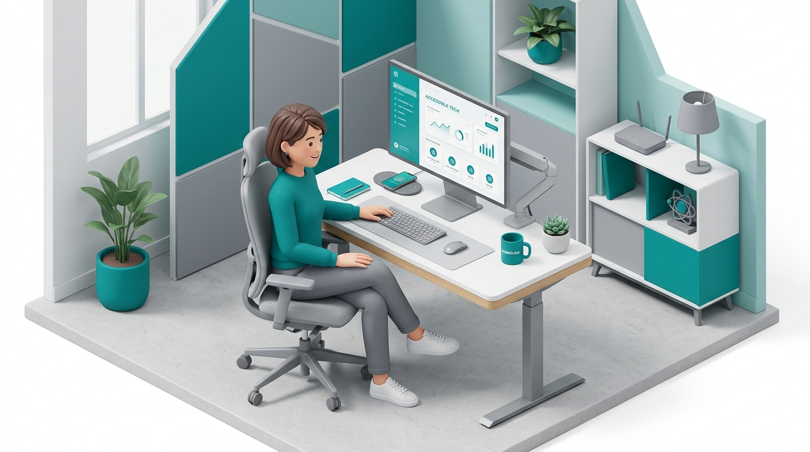

About & Help
A free accessibility scanner built to make the web a little more usable for everyone — students, designers, and developers alike.
How it works
Three steps, no sign-up, no backend.
Paste a URL
Drop in any public website link from the home screen.
We scan it
axe-core — the same engine accessibility professionals use — checks the page against WCAG rules.
Get a report
See a score, prioritized issues, live fix previews, and an exportable PDF.
Frequently asked questions
Not quite — automated tools like axe-core catch roughly 30–40% of accessibility issues. A 100 score means no automatically-detectable problems were found. The Best Practices tab covers the manual checks a scanner can't do.
Some sites block automated/cross-origin requests (CORS), need a login, or load content in ways our fetcher can't reach. AccessiCheck tries multiple proxy routes automatically before giving up.
Everything stays on your device. Scan results live in your browser's session for the current report, and your score history is saved in local storage on this device only — nothing is sent to a server. Clear it anytime from Settings.
Critical issues (axe-core's "critical" and "serious" impact levels) tend to block assistive technology users completely. Warnings ("moderate" impact) make things harder but usually don't block access entirely. Fix critical issues first.